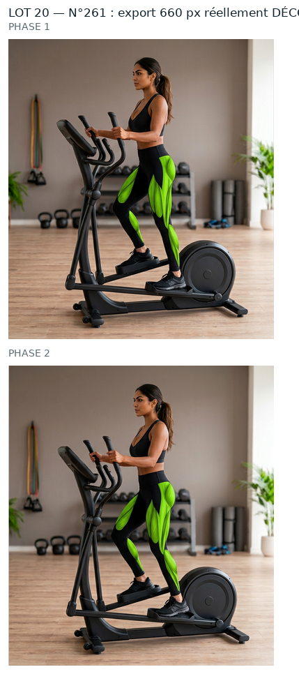
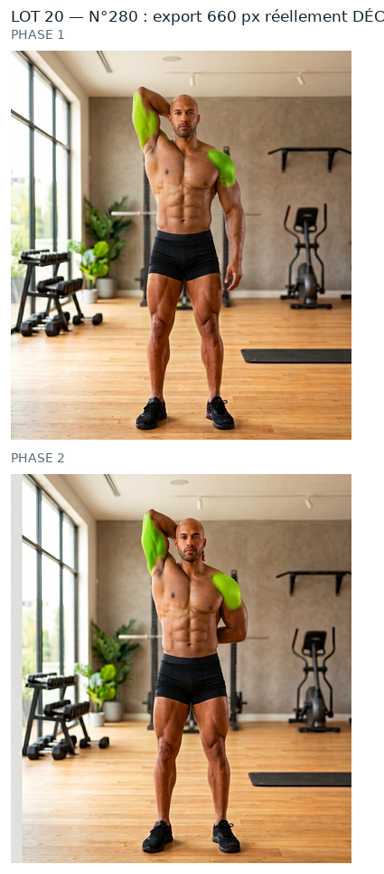
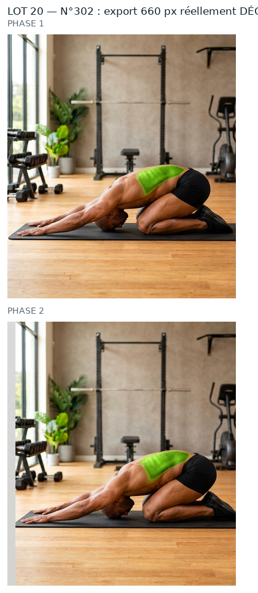
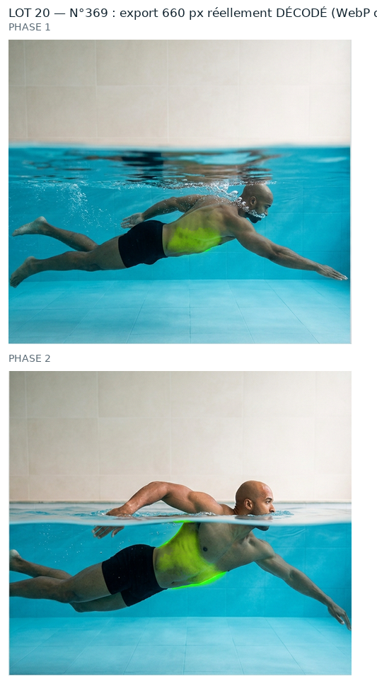

Mêmes règles que le n°44 et les lots précédents que tu as validés : source PNG native, aucun agrandissement, retouche à la résolution de la source, vert ramené dans la famille du n°260, puis WebP animé 660 px (+ GIF de secours). Rien n'est intégré : aucun GIF livré remplacé, APK intact, 0 image générée.
Excellent : couverture 0,81-0,83, debordement 0,01, manque sur peau 0 %. Le vert est exactement la ou le GIF livre le mettait. Deuxieme plus grande zone du lot (24 333 px).
zone verte étendue (12514 px) : à vérifier qu'elle ne déborde pas sur le décor
RECORD de debordement (0,42) : la planche surligne beaucoup plus large que le GIF livre. En contrepartie, c est le plus fort gain de couleur du lot : S 0,487 -> 0,791. Couverture 0,78-0,88 et manque sur peau 0 %. A regarder : le vert s etend-il trop loin ?
contour large : 14.29 px de transition sur la phase 1 (3 à 6 px sur les numéros les plus nets) — le bord du vert y est plus doux
contour large : 12.9 px de transition sur la phase 2 (3 à 6 px sur les numéros les plus nets) — le bord du vert y est plus doux
phase 1 plus terne que la référence (0.791 contre 0.914) : l'ombrage entre les phases est conservé — dis-moi si tu veux la remonter
phase 2 plus terne que la référence (0.82 contre 0.914) : l'ombrage entre les phases est conservé — dis-moi si tu veux la remonter
teinte de la source à 99.3°, éloignée des 86,3° du n°260 — la couleur de départ est différente
Ces planches montrent ce que contient réellement le WebP et le GIF de repli (fichiers rouverts image par image), pas le PNG de travail.

n°261 — WebP + GIF décodés

n°280 — WebP + GIF décodés

n°302 — WebP + GIF décodés

n°369 — WebP + GIF décodés
Ce qui reste écarté
n°1, 9, 10 : vert = feuillage du décor (décision du 01/10/2026).
n°218, 235, 239 : planche annoncée ≠ GIF livré (47 à 80/255) — chantier à part.
34 numéros « femme » sans source native (210, 224-259, 274-276, 289-330) : aucune source, donc hors de cette méthode.
Limites (inchangées)
Le GIF reste limité à 256 couleurs par image : c'est le WebP qui porte la qualité.
Au-delà de 660 px d'export on n'ajoute aucun détail, seulement du poids.
Les ROI sont dérivées de la tache verte mesurée dans le GIF livré, pas posées à l'œil (pas de vision dans cette session) : à confirmer visuellement.
Dis-moi, numéro par numéro : « 261 OK » · « 280 OK » · « 302 OK » · « 369 OK » — ou ce qui cloche (teinte, contour, zone mal placée…). Rien ne sera intégré et aucun GIF livré ne sera remplacé avant ton accord.
Contrôles chiffrés
ROI, seuils, percentiles, poids, PSNR et garantie « aucun pixel modifié hors zone » : evolution/media/refonte-photo/hd-2026-09-30/lot20/CONTROLES.json